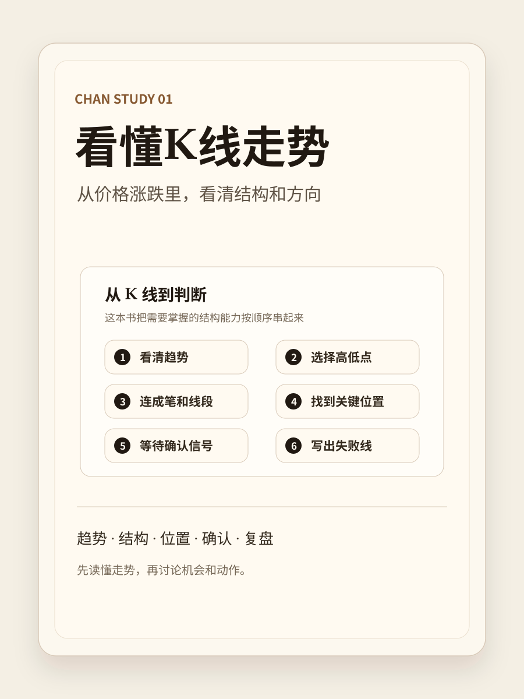
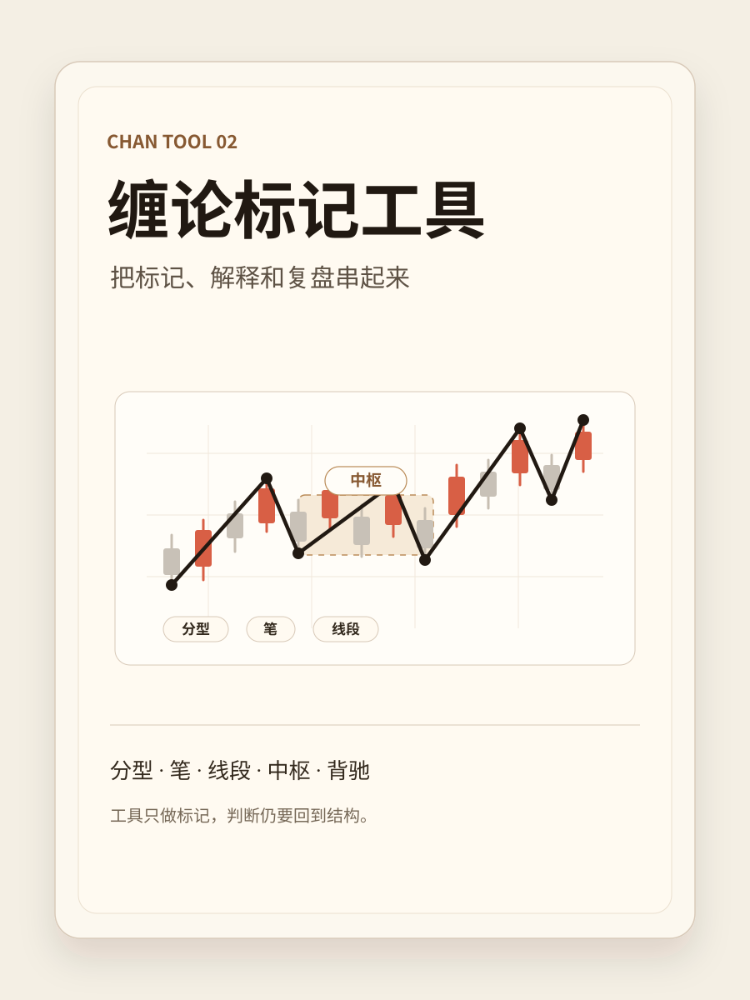

缠论学习书库
从 K 线到判断，把缠论讲成能看的书
这里不再按“基础册、实战册”拆开，而是合成一条真实学习路径：先用《看懂K线走势》理解价格走势，再用《缠论标记工具》把标记、解释和复盘串起来。

看懂K线走势
从真实K线出发，看清趋势、画出走势、判断结构、确认机会

缠论标记工具
把缠论结构标出来，辅助观察、解释和复盘
缠论学习书库
这里不再按“基础册、实战册”拆开，而是合成一条真实学习路径：先用《看懂K线走势》理解价格走势，再用《缠论标记工具》把标记、解释和复盘串起来。

从真实K线出发，看清趋势、画出走势、判断结构、确认机会

把缠论结构标出来，辅助观察、解释和复盘